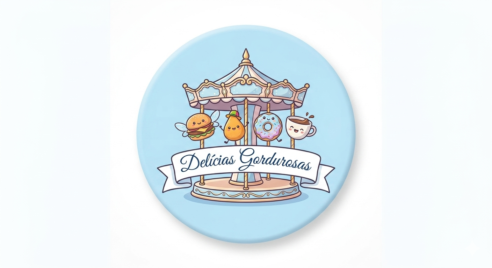
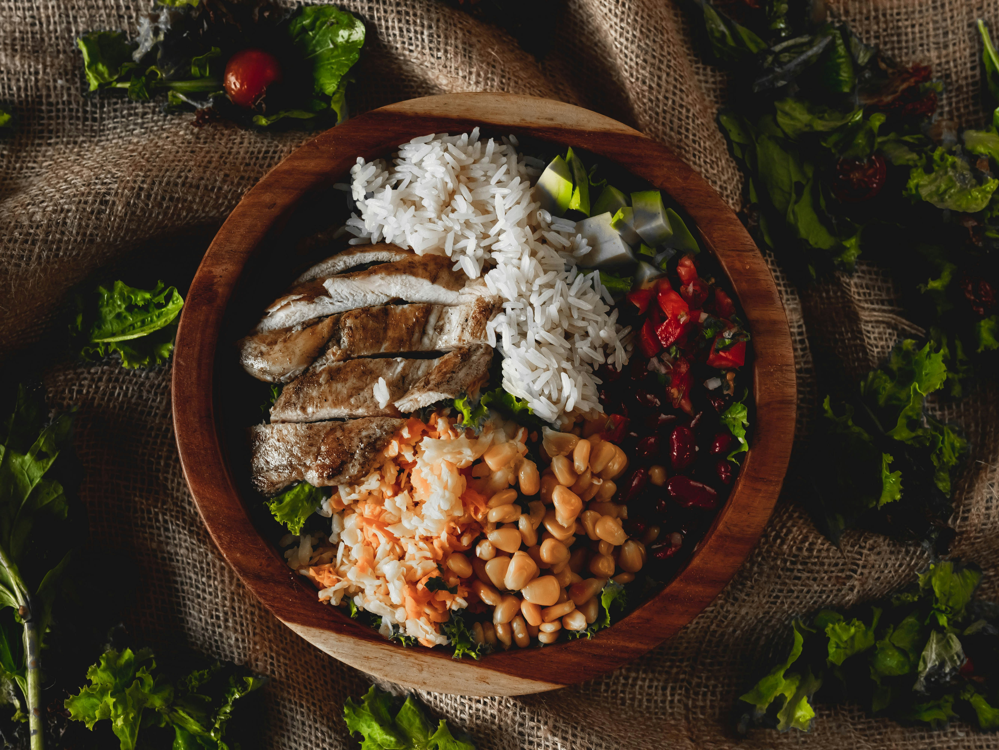
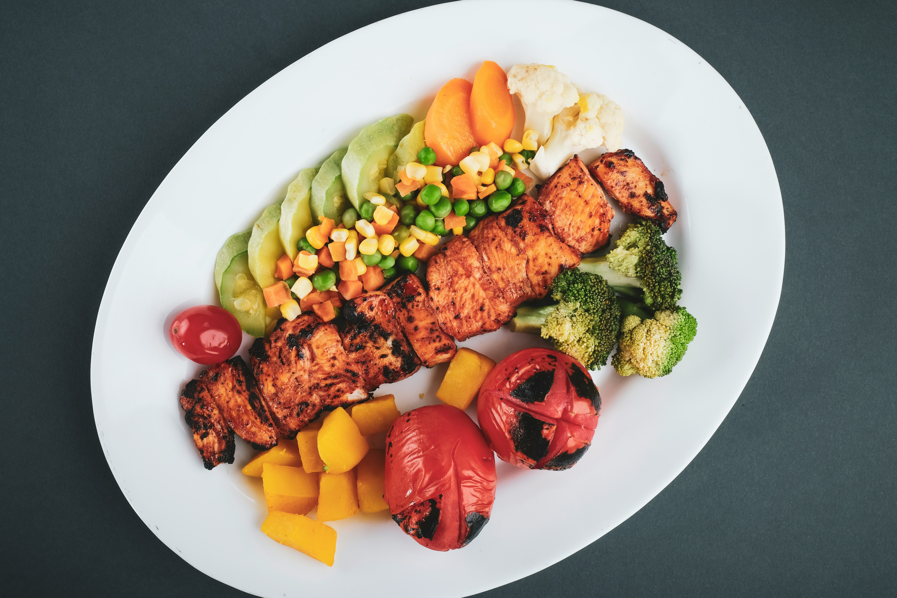
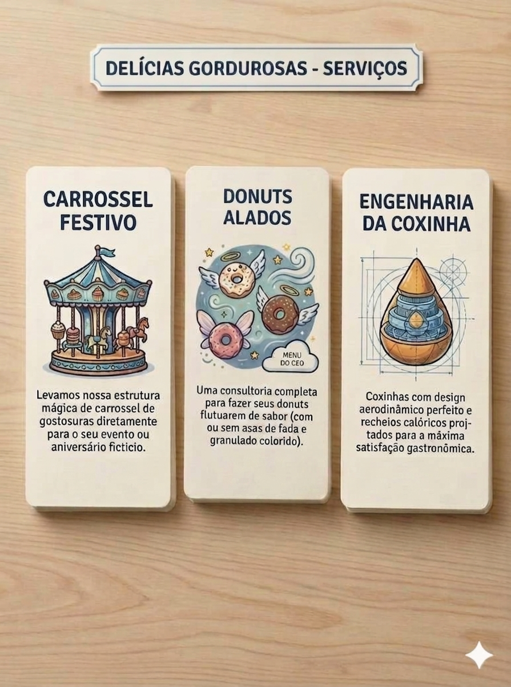

Oque é Delícias Gordurosas?
OBS: deve se deixar claro que somos apenas uma instituição admiradora das Delícias Gordurosas, qualquer coisa legal, jurídica, etc. vão direto ao site deles, chamado "Delícias Gordurosas Oficial".

Delícias Gordurosas é um restaurante de sucesso, globalmente conhecido por suas peculiaridades e, como o próprio nome diz, suas "Delícias Gordurosas". A compania não divulga a sua origem. Muitos dizem que: "devido a qualidade e o nível dos aspectos da Empresa, ela lembra a fantástica fábrica de chocolate de Willy Wonka".
O Ceo
O Líder da empresa de sucesso, é o mesmo que diz ter a fundado, Gordo de Guerra. É um ser tão misterioso quanto sua empresa, á humores dele ser uns dos co-fundadodes da Pará Lanches, contudo, as análises e investigações só apontam pra ele ser o fundador das Delícias Gordurosas.
Serviços da Delícias Gordurosas
Delícias Gordurosas não tem esse nome atoa, a grande maioria de seus pratos são compostos por bolos e doces, sempre possuindo um sabor e visual incrível.
A Empresa visando aumentar seu mercado consumidor inaugurou recentemente na data XXXX/XX/XX uma nova sessão da empresa chamada "Delícias Ingordurosas", para atrair o público FIT, eles inovaram e agora possuem um cardápio focado em alimentos fitness, mas, que ainda mantém o sabor clássico delicioso das delícias. E é claro que lá tem o famoso PF(Prato feito).








Cards
